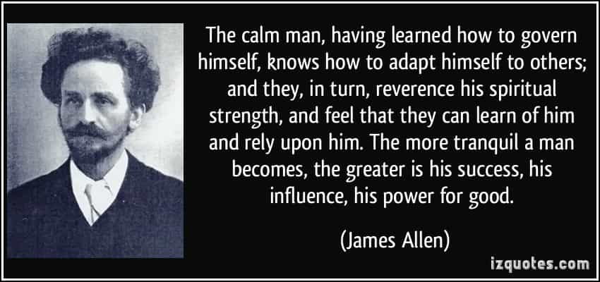

Dawn Pine (aka TheMaleBrain) is an Israeli 40+ divorced father of 2, former casualty of the blue-pill. Since he has taken the red pill his hobbies are: working out, writing, mentoring, harem management and self improvement.


Ah, a long-term relationship (LTR), where you have a women by your side who loves you (at least in the way women are capable of). The red pill teaches us that even if one locks down that unicorn or special snowflake, it is not the end of the game. One thing that a LTR brings with it is DRAMA. From my own experience of being in LTRs, while having red pill knowledge and mindset, I wish to share some of my tactics to handle and contain drama.
As the great CH noted:
…it’s only women who feel happier when drama reassures them that they are loved. Men do not need drama to feel loved.
So first thing is to know that there will be drama. Now that we know that there will be drama, it is time to see how we can reduce it. There is no nullifying it. Accept the inevitable.
I call this one “Preventive Medicine”. Maybe obvious, but still a good point to consider. Good sex reduces the drama, but what does good sex really mean? It’s when she releases emotions.
Make her feel extreme happiness, sadness or whatever. I highly recommend a good cry. A women who drains herself emotionally will not give you drama, as she still “recovers” from the release of her emotions. Orgasm is a bonus, but in order to reduce drama you need to make her cry or have any sort of emotional release. My method includes a combination of verbally encouraging her to let her emotions out, and spanking her.

Drama reduction technique that you didn’t consider
After the combination of pain, followed by emotional release, she needs a few days (48 hours at least) to come back to her “normal” state (i.e., regular chance of drama).
I call this one “Fighting fire with fire”. Chicks crave drama? Let’s give her some, on your own terms. Although it seems counterproductive, it is very efficient. My method is to choose a topic, which is meaningful to me, and initiate drama by starting a “semi-fight”. My preconditions are:
If those are met, and a trigger is pulled, I initiate drama. I may get tactically angry, call her on her behavior and even bring up patterns of her actions from the past. Yes, I flip the script. By doing this, you give her the drama she was craving, but on your own terms. Bonus is make up sex and re-establishing your hand.
I call this “Fighting fire with water”. The purpose of drama for girls is to make you lose control, or test your alphaness. So let’s stay calm, and let the storm pass. You still need to handle it, but it must be done from a place of confidence. What is the worst thing that could happen? She’ll leave? So what?
Being calm does not mean being indifferent. She may have a point to her drama. In this case you will need to address it. Just say “my bad” and fix it (if possible). But if it is not your fault, don’t reward the behavior. Tell her that there are better way to discuss it and do one of the following:

Whatever you do, don’t get caught in her emotional turmoil. If you feel that you are losing it, either get out or tell her “You have too much negative emotions, I can’t be here right now”. Even in the middle of a tantrum, those words hit hard and will make her start thinking about her “negative emotions”.
I call this “Mind over emotions”. You are a man. You have superior analytical powers. It is time to use them. The way to use them is to listen: is it a repeating pattern? What is she actually talking about? What was the drama trigger?
You acknowledge the problem and repeat it in your words. This shows her you “are making an effort”. Once you pass that, you start to apply your logic and guide her out. You always acknowledge her emotions, but maintain your frame about the problem, its origins and the solutions. By maintain frame, you start to pull her in to your frame. This is the place she wants to be, under your masculine guidance.
By analyzing it, with her, you move from the path of emotions to the path of logic. Also, by shifting the focus to logic, she cannot “dispute” your claims. I’ve been called “a swindle” or “a con man” for that. Good. This is exactly what you want to be.

I know that I’m tasked with leading the LTR, but that doesn’t mean that she doesn’t have to do something. Some women are genuinely surprised when I tell them I want them to work for the relationship. Women just expect to show up. So by using the equality BS you can move them to do some actual work, in your favor.
This is done by pointing out her pattern and asking her why does she thinks it happens, and what can SHE DO ABOUT IT. This is a topic that has been covered before. Once you pass that initial: “What do you mean I have to do something? I’m here” and maintain your frame, she’ll find out the joy of doing things for her men (other than sexual things). Now that she is doing things for you, and focusing on that, the drama tends to wither down. This is one of the trickier parts. You will be faced with massive indignation and probably resentment at first. You must have “alpha credit” to pull this off.
Drama is sometimes a sign of boredom. Even though your life is interesting enough, hers might not be. And who is that lightning rod that all emotions are turned to? YOU. In that case one should make some countermeasures in advance.

This is not about initiating drama, but about making the relationship interesting. If you have a schedule with your girlfriend, change it at least once a month (or more). You always hang out at the same places and do the same things? Don’t. Make a pool of hangout options and steer her towards trying new things. An 90-10 ratio is usually optimal—90% of the time you do the “routine” LTR activities, and in 10% of the time you “experiment”. Ratios may vary from girl to girl. Here are a few examples:
Some activities will turn out to be lame or worse. Frame it as an experience that failed and next time try other activities. For example, with one of my current LTRs, I once slept at her place. Big mistake. The bed was uncomfortable and this affected me the following day. Never again. But the girl was happy that we did something “new” and the drama was down for almost a month.
Drama is one of the downsides of a LTR. It is a sign that one needs to manage his woman in a more masculine way. From my experience, and I believe that the manosphere shares that view, drama is inevitable but can be reduced. I don’t like drama as much as the next guy, but I hope those lessons may be helpful. Be proactive, fight fire with fire and don’t be afraid to stand your ground.
Read Next: Don’t Stop Running Game In Long-Term Relationships